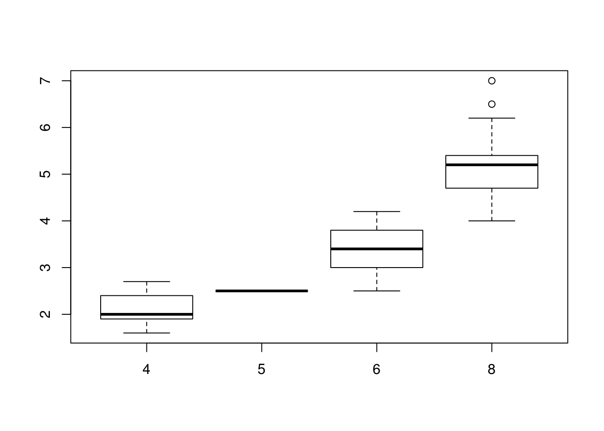
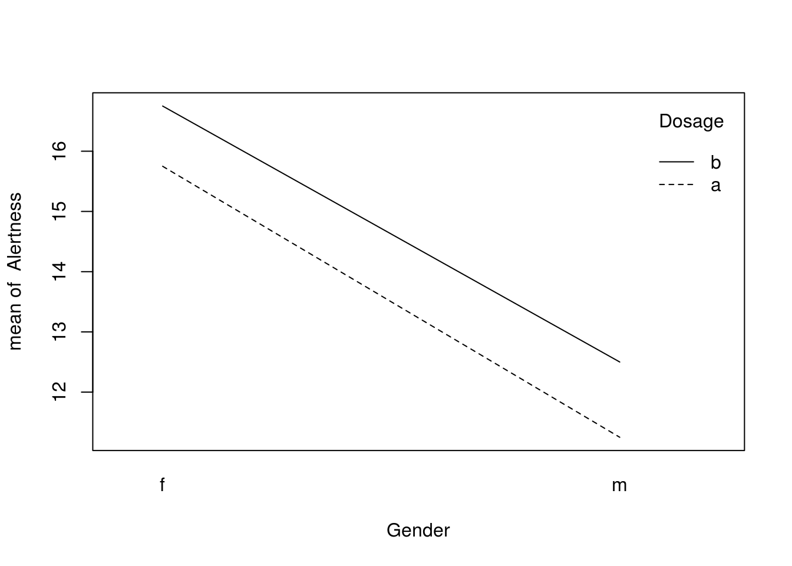
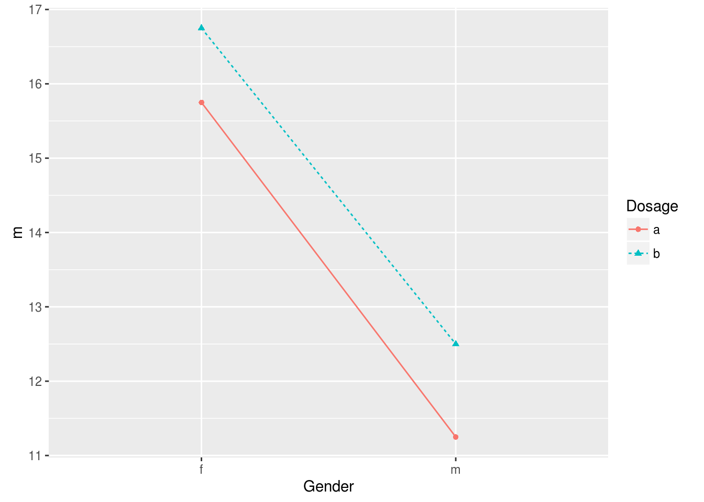

6 方差分析
6.1 One-Way ANOVA
T检验只能比较两样本均值，而方差分析（analysis of variance, ANOVA）能够同时比较多个均值，ANOVA通过分析方差来计算均值是否和总体有显著性差异，ANOVA把方差分为处理效应（treatment effect，真实差异)和误差（error，抽样误差或个体差异）两个来源，两个方差的比值服从F分布，因为方差本身就是个体和均值差平方和，所以对方差组成的分析能够反映均值的差异。
“处理”项是均值间的差异，而“误差”项是组内的差异，习惯性地称之为组间(between)差异和组内(within)差异。 把所有分组混在一起，当成一个样本，总的方差为： \[SS_{tot} = \sum(x-\bar{x})^2\] 将其分为组间方差和组内方差： \[SS_{tot} = SS_b+SS_w\] 其中组间方差为： \[SS_b=\sum_{j=1}^k n_j(\bar{x_j}-\bar{\bar{x}})^2\] 组间自由度是k-1，k是分组的个数，通常将组间方差除以组间自由度，得到组间均方(between groups mean square)，代表组间均值的处理效应。 组内方差为： \[SS_w=\sum_{j=1}^k\sum_{i=1}^{n_j}(x_{ij}-\bar{x_j})^2\] 组内自由度是N-k，N是把所有分组当成一个样本的样本量，通常将组内方差除以组内自由度，得到组内均方(within groups mean square)，代表组内误差。
方差分析所使用的均方，也就是上面公式所计算的方差除以相应的自由度。
6.1.1 单向方差分析
data(mpg)
mpg$cyl=factor(mpg$cyl)
head(mpg)## manufacturer model displ year cyl trans drv cty hwy fl class
## 1 audi a4 1.8 1999 4 auto(l5) f 18 29 p compact
## 2 audi a4 1.8 1999 4 manual(m5) f 21 29 p compact
## 3 audi a4 2.0 2008 4 manual(m6) f 20 31 p compact
## 4 audi a4 2.0 2008 4 auto(av) f 21 30 p compact
## 5 audi a4 2.8 1999 6 auto(l5) f 16 26 p compact
## 6 audi a4 2.8 1999 6 manual(m5) f 18 26 p compactboxplot(displ~cyl, data=mpg) 如果我们根据不同汽缸数（cylinders, cyl变量）对汽车进行分组，分析发动机排量（engine displacement, displ变量）均值是否不同，从图上可以看到，汽缸数越多，排量越大。
res=aov(displ~cyl, data=mpg)
summary(res)## Df Sum Sq Mean Sq F value Pr(>F)
## cyl 3 339.7 113.22 528.9 <2e-16 ***
## Residuals 230 49.2 0.21
## ---
## Signif. codes: 0 '***' 0.001 '**' 0.01 '*' 0.05 '.' 0.1 ' ' 1one way ANOVA的零假设是所有均值都相等，备择假设是至少有一个均值是有差别的。 这里计算出来的p值非常小，意味着reject零假设，接受备择假设。
one way anova给出的是总体信息，并没有对均值间两两进行统计的信息，并不清楚分组间谁和谁有显著性差异，想要知道这个信息，需要再进行后续分析。
我们可以先看一下均值：
model.tables(res, type="means")## Tables of means
## Grand mean
##
## 3.471795
##
## cyl
## 4 5 6 8
## 2.146 2.5 3.409 5.133
## rep 81.000 4.0 79.000 70.0006.2 TukeyHSD - Tukey honestly significant difference
对one way anova进行后续分析有很多方法，方差分析由R. A. Fisher提出，他设计出Fisher LSD (least significant difference)标准，现在很多统计学者认为这个方法太自由，现在普遍使用的是Tukey HSD检验，比Fisher LSD要保守得多。
TukeyHSD(res)## Tukey multiple comparisons of means
## 95% family-wise confidence level
##
## Fit: aov(formula = displ ~ cyl, data = mpg)
##
## $cyl
## diff lwr upr p adj
## 5-4 0.3543210 -0.2589862 0.9676282 0.4421149
## 6-4 1.2631817 1.0738406 1.4525229 0.0000000
## 8-4 2.9871781 2.7917721 3.1825842 0.0000000
## 6-5 0.9088608 0.2951884 1.5225332 0.0009354
## 8-5 2.6328571 2.0172865 3.2484278 0.0000000
## 8-6 1.7239964 1.5274470 1.9205458 0.0000000它会计算不同组两两之间的差异、置信区间和较正后的p值。
TukeyHSD并不仅限于单向方差分析，它可以对各种方差分析进行后续的分析。
6.2.1 两两T检验
如果只是多组实验，只需要两两比较均值的话，可以对分组两两进行T检验，当然必须进行p值较正，因为随着统计检验次数的增加，犯I类错误的概率会不断增大。方差分析对于复杂的实验设计是很有优势的，比如多因素，重复测量数据。
stats包里提供了pairwise.t.test()函数，可以进行两两T检验，还能对p值进行较正，使用起来很方便：
with(mpg, pairwise.t.test(displ, cyl, p.adjust.method="bonferroni"))##
## Pairwise comparisons using t tests with pooled SD
##
## data: displ and cyl
##
## 4 5 6
## 5 0.81757 - -
## 6 < 2e-16 0.00098 -
## 8 < 2e-16 < 2e-16 < 2e-16
##
## P value adjustment method: bonferroni6.2.2 如何理解方差分析
单向方差分析是最简单的，因为只有一个因素，双向方差分析考虑两个因素，理解了这两种ANOVA分析，那么对于多因素N-WAY ANOVA自然也不在话下。而一些高级的ANOVA可以针对复杂的实验设计，虽然复杂，但其基础思想是高度一致的。
很多人可能有疑问，为什么分析方差可以来检验均值？方差本身就是离均差的平方和，但这样的解释似乎不够。
我们来看一下T检验，T检验的形式是 \(t=\frac{\bar{x}-\mu}{SE}\) ,我在T检验一节里，讲这相当于把数据归一化到标准正态分布上，也可以这么讲，把差值放到标准误SE的尺度上，我们要看的是差值有多大，但要把它放到SE的尺度上来看，SE代表的是统计量 \(\bar{x}\) 的离散度，衡量的是不确定性。从这个角度上看，我们可以把分子当成是信号，而分母当成是噪声，于是t值计算的就是信噪比。
再来看方差分析，有多组均值，零假设是这些均值没有差别。只有一两组的时候，使用T检验，信号是差值，但现在有多组，我们把差值加和起来的话，差值可正可负，正负加和会抵消，所以很自然的，把差值进行平方运算，当然要使用样本量进行加权，因为样本量越大的数据，越可靠，权重要大一些，于是信号（分子）是 \(SS_b=\sum_{j=1}^k n_j(\bar{x_j}-\bar{\bar{x}})^2\) ，这就是组间方差，当然最终的信号是均方，需要除以自由度，以消除分组数目的影响。
分母是对数据不确定性的度量，也就是噪声，通过组内数据方差来估计。
对于j分组，样本方差为： \(s_j = \sum_{i=1}^{n_j} (x_{ij} - \bar{x_j})^2\) 均值误差为： \(SE_j = \sqrt{\frac{s_j^2}{n_j}}\) 那么我们可以使用各个分组的均值误差对总体均值误差进行估计： \[SE_{tot}^2 = \frac{\sum_{j=1}^k (n_j-1)SE_j^2}{\sum_{j=1}^k n_j - k} \\ = \frac{\sum_{j=1}^k (n_j-1) \frac{s_j^2}{n_j}}{\sum_{j=1}^k n_j - k} \\ \simeq \frac{\sum_{j=1}^k s_j^2}{\sum n_j - k}\]
从上面的公式可以发现分子 \(\sum_{j=1}^k s_j^2\) 是组内方差，而分母 \(\sum n_j - k\) 是自由度N-k，总体误差的估计就是方差分析中的误差均方。
所以方差分析和T检验是高度一致的，分子是信号，T检验中是差值，方差分析中为了消除差值正负的影响，用差值平方和，也就是方差。 分母是噪声，也就是度量不确定性的误差，T检验中使用标准误SE，而方差分析中使用方差，也就是标准误SE的平方。
分子度量差别到底有多大，然后把它放在不确定性的尺度(分母)上看，这就是T检验和方差分析的原理。
6.3 Two-Way ANOVA
ANOVA可以分析两个或多个因子的复合效应，ANOVA的设计越复杂，对结果的解析同样会变得很复杂。

双向ANOVA
双向ANOVA分析是单向ANOVA的扩展，分析两个因素，我们称之为A和B，假如A有r个水平，B有c个水平，则总共有rxc个分组，每个分组的数据数目要一致。
6.3.1 前提条件
使用Two-Way ANOVA，需要满足以下假设： + 总体须是正态分布或接近于正态分布 + 样本必须是独立样本 + 方差齐性 + 分组样本量一样
6.3.2 零假设
双向ANOVA能够同时检验3个零假设： + 单独考虑A因素，总体均值间没有差别。这相当于对A因子进行单向ANOVA + 单独考虑B因素，总体均值间没有差别。这相当于对B因子进行单向ANOVA + A和B两个因素，没有相互作用。这相当于使用二联表进行独立性分析
6.3.3 方差计算
data <- read.table("data/gender_dose.tsv", header=TRUE)
data## Observation Gender Dosage Alertness
## 1 1 m a 8
## 2 2 m a 12
## 3 3 m a 13
## 4 4 m a 12
## 5 5 m b 6
## 6 6 m b 7
## 7 7 m b 23
## 8 8 m b 14
## 9 9 f a 15
## 10 10 f a 12
## 11 11 f a 22
## 12 12 f a 14
## 13 13 f b 15
## 14 14 f b 12
## 15 15 f b 18
## 16 16 f b 22我们来分析上面这份数据，看Gender和Dosage两个因素对Alerness水平的影响。Gender和Dosage都是2个水平，这是最简单的2x2设计。 进行双向方差分析，需要计算6个方差。
6.3.3.1 总方差
不对数据进行分组，计算出来的方差，为总方差，自由度为样本量减1.
grand.mean <- with(data, mean(Alertness))
N <- with(data, length(Alertness))
N## [1] 16SS.tot <- with(data, sum((Alertness-grand.mean)^2))
SS.tot## [1] 392.93756.3.3.2 单元格方差
两个因素A和B，分别有r和c个水平，则组成rxc的二联表，把数据分成rxc个组，和单向ANOVA分析一样，计算组间方差： \[ SS_{tot} = \sum(x-\bar{\bar{x}})^2\]
require(plyr)
grp <- ddply(data, .(Gender, Dosage), function(x) data.frame(n=length(x$Alertness), m=mean(x$Alertness)))
grp## Gender Dosage n m
## 1 f a 4 15.75
## 2 f b 4 16.75
## 3 m a 4 11.25
## 4 m b 4 12.50SS.cells <- with(grp, sum(n*(m-grand.mean)^2))
SS.cells## [1] 81.68756.3.3.3 因素A的方差
只考虑因素A，对于这个数据来说，是性别因素，只使用性别因素对数据进行分组，按单向ANOVA分析一样，计算组间方差：
Am <- with(data, tapply(Alertness, Gender, mean))
An <- with(data, tapply(Alertness, Gender, length))
SS.gender <- sum(An * (Am - grand.mean)^2)
SS.gender## [1] 76.5625自由度是因素A的水平减1，既r-1，这里r=2，所以df=1。
6.3.3.4 因素B的方差
只考虑因素B，对于这个数据来说，是药剂用量因素，只使用dosage因素对数据进行分组，按单向ANOVA分析一样，计算组间方差：
Bm <- with(data, tapply(Alertness, Dosage, mean))
Bn <- with(data, tapply(Alertness, Dosage, length))
SS.dosage <- sum(Bn * (Bm - grand.mean)^2)
SS.dosage## [1] 5.0625自由度是因素B的水平减1，既c-1，这里c=2，所以df=1。
6.3.3.5 因素A和B相互作用的方差
单元格方差由A因素和B因素组成，可以拆分为因素A的方差、因素B的方差和AB互作的方差，即： \[ SS_{cells} = SS_A + SS_B + SS_{AB}\] 所以A和B互作的方差： \[ SS_{AB} = SS_{cells} - SS_A - SS_B\]
SS.gender.dosage <- SS.cells - SS.gender - SS.dosage
SS.gender.dosage## [1] 0.0625自由度是A的自由度乘以B的自由度，即：(r-1)(c-1)。
6.3.3.6 误差方差
最后是组内方差，它度量误差，方差分析和线性回归是高度一致的，在R的aov函数里，会把误差方差写成残差方差，这其实来自于线性回归。
dw <- ddply(data, .(Gender, Dosage), function(x) x$Alertness - mean(x$Alertness))
dw## Gender Dosage V1 V2 V3 V4
## 1 f a -0.75 -3.75 6.25 -1.75
## 2 f b -1.75 -4.75 1.25 5.25
## 3 m a -3.25 0.75 1.75 0.75
## 4 m b -6.50 -5.50 10.50 1.50sum(dw[,-c(1,2)]^2)## [1] 311.25上面按照A和B两个因素，分成rxc组，按单向ANOVA分析方法，计算组内方差。 实际上，误差方差等于总方差减去单元格方差，也就是总方差中不能由因素A和B解释的，就是误差方差：
SS.err = SS.tot - SS.cells
SS.err## [1] 311.25自由度是总自由度减去A，B和AB互作的自由度，即(N-1) - (r-1) - (c-1) - (r-1)(c-1).
6.3.4 p值计算
计算了这6个方差之后，就要以计算F值，进而计算p值。计算F值需要用均方，即方差除以自由度。分子相当于信号，而分母相当于噪声。信噪比足够高，则这个因素有作用。
pf(SS.gender/1 / (SS.err/12), df1=1, df2=12, lower.tail=F)## [1] 0.1114507pf(SS.dosage/1 / (SS.err/12), df1=1, df2=12, lower.tail=F)## [1] 0.6664956pf(SS.gender.dosage/1 / (SS.err/12), df1=1, df2=12, lower.tail=F)## [1] 0.9616567上面分别看了Gender, Dosage, Gender和Dosage相互作用的p值，分别对应于前面提到的三个零假设。
6.3.5 ANOVA using R
stats包中的aov()函数，可以进行双向方差分析，我们并不需要手工计算这么多的统计量。
summary(with(data, aov(Alertness~Gender*Dosage)))## Df Sum Sq Mean Sq F value Pr(>F)
## Gender 1 76.56 76.56 2.952 0.111
## Dosage 1 5.06 5.06 0.195 0.666
## Gender:Dosage 1 0.06 0.06 0.002 0.962
## Residuals 12 311.25 25.94虽然这里相互作用没有显著性，但做为演示，依然可以画一下相互作用图，使用stats包提供的interaction.plot，如果有显著性，可以从图中看出效应。
with(data, interaction.plot(Gender, Dosage, Alertness)) 这个图其实就是以Gender为X轴，按Dosage进行分组，以分组的Alertness均值为Y轴，进行画图，自己使用ggplot2来画也是非常简单的，还可以给均值加上errorbar或confidence interval，都是很容易的事情。
require(ggplot2)
grp <- ddply(data, .(Gender, Dosage), function(x) data.frame(m=mean(x$Alertness)))
ggplot(grp, aes(Gender, m, group=Dosage, shape=Dosage, color=Dosage, linetype=Dosage))+geom_point()+geom_line()
对于分组数据均值是否有差异，也可以画boxplot或者是使用均值和置信区间来画图。
6.4 Advanced ANOVA
6.4.1 Repeated-Measures ANOVA
ANOVA分析要求测量值是独立的，但是很多情况下，并不独立，比如对一个病人用药后不同时间段进行测量，同一个病人的测量值显然是相关的。 这可以看成是成对T检验的扩展，可以应用于同一对象多个测量值的情况，所以称之为重复测量方差分析。
假如我们有以下数据：
data <- read.table("data/aov2.tsv", header=T)
data## Observation Subject Task Valence Recall
## 1 1 Jim Free Neg 8
## 2 2 Jim Free Neu 9
## 3 3 Jim Free Pos 5
## 4 4 Jim Cued Neg 7
## 5 5 Jim Cued Neu 9
## 6 6 Jim Cued Pos 10
## 7 7 Victor Free Neg 12
## 8 8 Victor Free Neu 13
## 9 9 Victor Free Pos 14
## 10 10 Victor Cued Neg 16
## 11 11 Victor Cued Neu 13
## 12 12 Victor Cued Pos 14
## 13 13 Faye Free Neg 13
## 14 14 Faye Free Neu 13
## 15 15 Faye Free Pos 12
## 16 16 Faye Cued Neg 15
## 17 17 Faye Cued Neu 16
## 18 18 Faye Cued Pos 14
## 19 19 Ron Free Neg 12
## 20 20 Ron Free Neu 14
## 21 21 Ron Free Pos 15
## 22 22 Ron Cued Neg 17
## 23 23 Ron Cued Neu 18
## 24 24 Ron Cued Pos 20
## 25 25 Jason Free Neg 6
## 26 26 Jason Free Neu 7
## 27 27 Jason Free Pos 9
## 28 28 Jason Cued Neg 4
## 29 29 Jason Cued Neu 9
## 30 30 Jason Cued Pos 10按照普通的方差分析
summary(aov(Recall~Task*Valence, data=data))## Df Sum Sq Mean Sq F value Pr(>F)
## Task 1 30.0 30.00 1.749 0.198
## Valence 2 9.8 4.90 0.286 0.754
## Task:Valence 2 1.4 0.70 0.041 0.960
## Residuals 24 411.6 17.15如果这样来做，忽略了同一受试对象(subject)各个观察值之间的相关性这一信息，好比把成对T检验的成对信息给扔了一样。
方差分析按照因素进行分组，误差均方即为组间均方，因为数据是独立，但上面的数据并不独立。这里如果只按照因素进行分组，而不考虑受试对象的信息，则把受试对象内部的方差也给归入误差方差，像上面这种重复测量的数据，受试对象内部的方差应该从误差方差中分离出来，归入真实方差。

重复测量ANOVA
重复测量方差分析和其它方差分析的差别在于对方差的划分不同。
summary(aov(Recall~Task*Valence+Error(Subject/(Task*Valence)), data=data))##
## Error: Subject
## Df Sum Sq Mean Sq F value Pr(>F)
## Residuals 4 349.1 87.28
##
## Error: Subject:Task
## Df Sum Sq Mean Sq F value Pr(>F)
## Task 1 30.00 30.000 7.347 0.0535 .
## Residuals 4 16.33 4.083
## ---
## Signif. codes: 0 '***' 0.001 '**' 0.01 '*' 0.05 '.' 0.1 ' ' 1
##
## Error: Subject:Valence
## Df Sum Sq Mean Sq F value Pr(>F)
## Valence 2 9.80 4.900 1.459 0.288
## Residuals 8 26.87 3.358
##
## Error: Subject:Task:Valence
## Df Sum Sq Mean Sq F value Pr(>F)
## Task:Valence 2 1.40 0.700 0.291 0.755
## Residuals 8 19.27 2.408把受试对象内部的方差从误差方差中分离出去，误差项变小了，F值变大，p值变小，检验的power大了很多。
6.4.2 Mixed-Factorial ANOVA
md <- read.table("data/aov.mixed.tsv", header=T)
head(md)## Obs Subject Gender Dosage Task Valence Recall
## 1 1 A M A F Neg 8
## 2 2 A M A F Neu 9
## 3 3 A M A F Pos 5
## 4 4 A M A C Neg 7
## 5 5 A M A C Neu 9
## 6 6 A M A C Pos 10tail(md)## Obs Subject Gender Dosage Task Valence Recall
## 103 103 R F C F Neg 19
## 104 104 R F C F Neu 17
## 105 105 R F C F Pos 19
## 106 106 R F C C Neg 22
## 107 107 R F C C Neu 21
## 108 108 R F C C Pos 20上面这个数据，有18个对象，9个男性9个女性，每个对象被使用了三种可能剂量的药，然后被测试使用两种记忆类型（cued和free call），能否回忆起三种类型的词(positive, negative和neutral)，这里有2个对象间变量：性别和剂量，2个对象内剂量：Task（2个水平）和Valence（3个水平）。
下面的命令，对 对象内因子、对象内误差项、对象间因子 进行方差分析。
summary(aov(Recall~(Task*Valence*Gender*Dosage)+Error(Subject/(Task*Valence))+(Gender*Dosage),data=md))##
## Error: Subject
## Df Sum Sq Mean Sq F value Pr(>F)
## Gender 1 542.3 542.3 5.685 0.0345 *
## Dosage 2 694.9 347.5 3.643 0.0580 .
## Gender:Dosage 2 70.8 35.4 0.371 0.6976
## Residuals 12 1144.6 95.4
## ---
## Signif. codes: 0 '***' 0.001 '**' 0.01 '*' 0.05 '.' 0.1 ' ' 1
##
## Error: Subject:Task
## Df Sum Sq Mean Sq F value Pr(>F)
## Task 1 96.33 96.33 39.862 3.87e-05 ***
## Task:Gender 1 1.33 1.33 0.552 0.472
## Task:Dosage 2 8.17 4.08 1.690 0.226
## Task:Gender:Dosage 2 3.17 1.58 0.655 0.537
## Residuals 12 29.00 2.42
## ---
## Signif. codes: 0 '***' 0.001 '**' 0.01 '*' 0.05 '.' 0.1 ' ' 1
##
## Error: Subject:Valence
## Df Sum Sq Mean Sq F value Pr(>F)
## Valence 2 14.69 7.343 2.998 0.0688 .
## Valence:Gender 2 3.91 1.954 0.798 0.4619
## Valence:Dosage 4 20.26 5.065 2.068 0.1166
## Valence:Gender:Dosage 4 1.04 0.259 0.106 0.9793
## Residuals 24 58.78 2.449
## ---
## Signif. codes: 0 '***' 0.001 '**' 0.01 '*' 0.05 '.' 0.1 ' ' 1
##
## Error: Subject:Task:Valence
## Df Sum Sq Mean Sq F value Pr(>F)
## Task:Valence 2 5.39 2.6944 1.320 0.286
## Task:Valence:Gender 2 2.17 1.0833 0.531 0.595
## Task:Valence:Dosage 4 2.78 0.6944 0.340 0.848
## Task:Valence:Gender:Dosage 4 2.67 0.6667 0.327 0.857
## Residuals 24 49.00 2.0417多元回归的F值和ANOVA的F值是一样的，事实上两者的底层是general linear model，R在计算ANOVA时使用的是多元回归的特例。